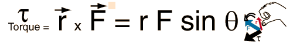

Torque as a Vector ProductThe torque produced by a force takes the form of a vector product. You may enter values in any of the boxes below. Then click on the symbol for either the vector product or the angle.  |
Index Vector concepts | ||
|
Go Back |